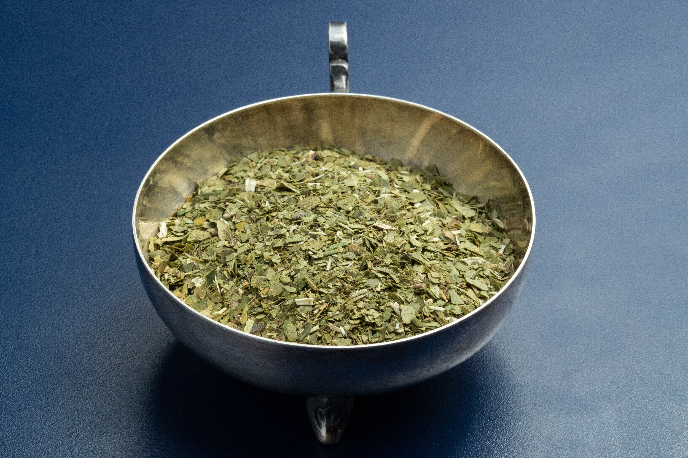
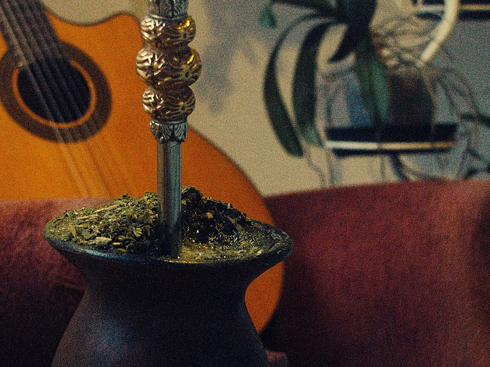
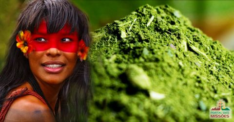

A ERVA-MATE e OS POVOS INDIGENAS
Nesse site sera apresentado o tema: a erva mate e os povos indigenas. o objetvo e mostrar suas principais caracteristicas, sua historia e sua importancia para a arte e a cultura do parana. alem disso, serao destacados aspectos que ajudam a compreender melhor sua influencia na sociedade e no desenvolvimento cultural paranaense.

A ERVA-MATE E OS POVOS INDIGENAS
nesse site vamos apresentar, como os povos indigenas descobriram a ERVA MATE

Curiosidades
Curiosidades 1
A erva-mate e um elemento que representa o Parana.
a ERVA-MATE possui raizes profundas na historia dos povos originarios, sendo os povos GUARANIe KAINGANG seus principais disseminadores ancestrais.

curiosidade 2
Os povos indigenas do Parana preservam tradicoes e artesanatos proprios